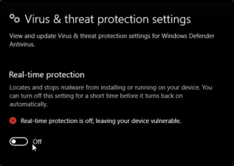
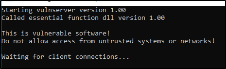

Spiking
First of all, set the Real-Time Protection down if you haven't done it already:


DISCLAIMER: RUN ALL AS AN ADMINISTRATOR!!!
The first step is to run the VulnServer (as an administrator):



Now, run Immunity Debugger (as an administrator):
We will attach to the VulnServer and run (you will see “Running” into the bot right corner)


Now, back at the Attacker Machine (Kali), connect to the VulnServer (it run on port 9999):


We are going to do some Spiking: throwing a bunch of chars to see if we can buffer overflow
We will try one command at time.
As an example, we want to see if the TRUN command is vulnerable to buffer overflow
For spiking, we will use a tool called generic_send_tcp:
Close the connection with VulnServer (use EXIT command)


We will need a spike script (for the 2 variables: set the value at 0)
We can use a stats.spk script
In this case, we will start with the STATS command
stats.spk:
s_readline();
s_string("STATS ");
s_string_variable("0");
We are trying but seems to be not vulnerable:


Now we are trying the TRUN argument:
trun.spk
s_readline();
s_string("TRUN ");
s_string_variable("0");
Run the commands:
We will see the Immunity Debugger Paused and an “Access Violation” on the Server
(The server is crashed!!!)


If you see into the top right of the Immunity Debugger we can see a lot of information:
The EBP and EIP are overwritten with 414141 (Are 4 A, if you see into the bot right corner)
We got it: the EIP is overwritten and we can get it to point wherever we want to!